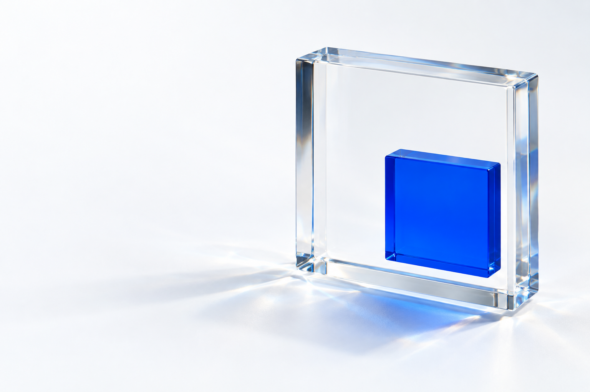

 openpaliPUBLIC BY DESIGN
openpaliPUBLIC BY DESIGN THE PALISADES REBUILD
A clearer
picture.
Built
in public.
A public evidence platform.
Recovery, in the open.

openpaliPUBLIC BY DESIGN THE PALISADES REBUILD
A public evidence platform.
Recovery, in the open.